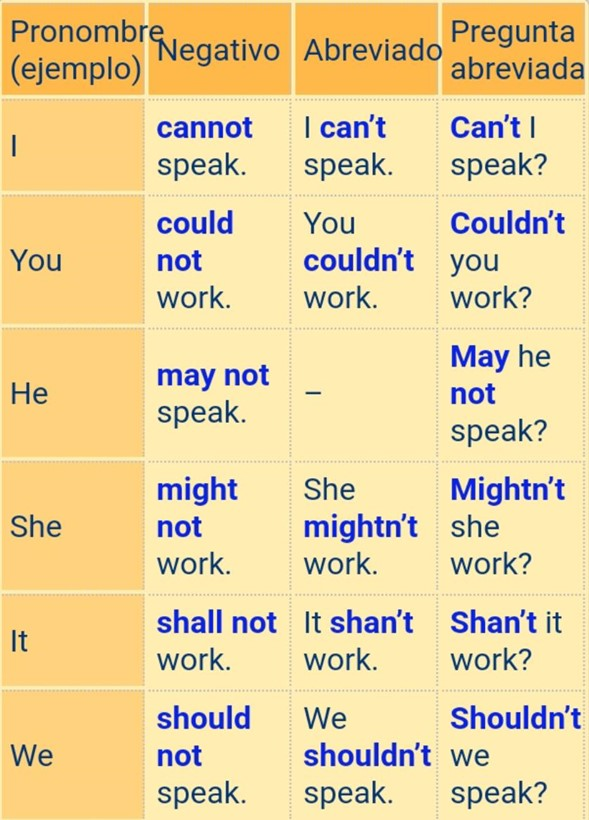
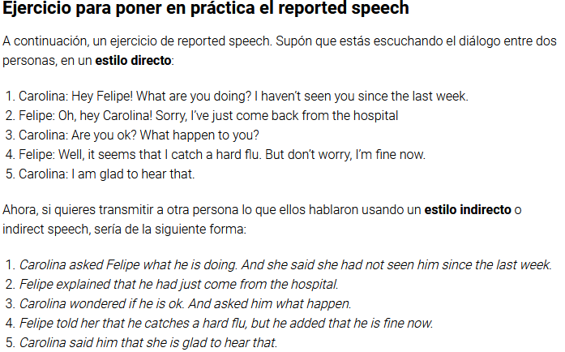
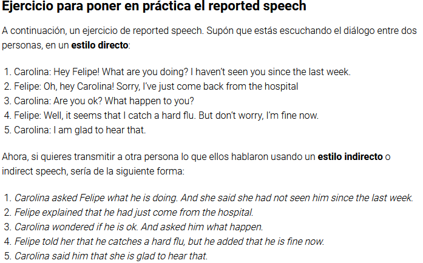

Modal & Auxiliary Verbs. Passive Voice
Modal & Auxiliary Verbs
Los modal verbs, o verbos modales, son aquellos verbos en inglés que ayudan a que una oración tenga un mejor significado gracias a su función. Puedes utilizarlos cuando quieras darle otro significado a una oración. Por ejemplo, si quieres pedir permiso para hablar o para saber si podrían venir a buscarte. Entonces, estos verbos que sirven como verbos auxiliares, buscan darle un significado especifico a ciertas acciones. Ahora, ¿cuáles son y cómo utilizarlos?
Can
Su significado dependerá de lo que quieras decir. Puedes usarlo para expresar alguna posibilidad o petición, o para decir que estás habilitado o capacitado para algo.
Could
Este modal verb viene a ser la forma en pasado de “can”. Su significado es el mismo, pero el tiempo verbal expresa algo que ya sucedió, o también es utilizado para brindar alternativas.
May
Es una variación del verbo “can”, pero es un verbo modal más formal. Si quieres pedir permiso, esta es una buena forma. Con él puedes contar o establecer una posibilidad.
Might
Para sugerencias o posibilidades, este verbo lo expresa claramente. Su uso depende del contexto, siendo mucho más flexible que “may”.
Will
Este es un verbo que habla sobre el futuro. Predicción, pregunta o inquietud, establece que es posible o ya es factible que algo suceda después.
Would
Habla de hábitos que realizabas antes. También puede utilizarse en tiempo futuro si tu intención es mostrar que estás dispuesto a hacer algo o establecer condiciones.
Must
Expresa necesidad o una sugerencia contundente. Además, implica que puedes llegar a suponer referente a algo.
Shall
Este es un verbo no muy común por ser formal. Su significado es como el del verbo “will”, expresa algo en relación a lo que puede llegar a suceder.
Should
Se utiliza más a la hora de dar consejos, hacer o pedir sugerencias, opiniones y acciones, o para generar cierto nivel de expectativa ante algo futuro.
Ought To
No es muy frecuente que te encuentres con este verbo. Sin embargo, su significado es parecido al de “should”.
Algunos ejemplos del uso de los Modal Verbs
Can (poder):
“Can you see the giraffe over there?” (¿Puedes ver la jirafa ahí?)
May (poder, tener permiso):
“May I have a seat?” (¿Me puedo sentar?)
Must (tener que, hay que, deber):
“The key must be in the living room.” (La llave tiene que estar en el cuarto de estar.)
Shall (querer que):
“Shall we go to the new Greek restaurant?” (¿Quieres que vayamos al nuevo restaurante griego?)
Pronombres para el uso de los Modal Verbs

Para más información, ingrese al siguiente enlace: //n9.cl/t2hpc
Passive Voice
La voz pasiva es una estructura gramatical que se utiliza cuando no se quiere enfatizar quién o qué realiza la acción, sino que se enfatiza quién o qué la recibe.
La contraparte de la "Voz Pasiva" se denomina "Voz Activa" y la misma enfatiza quién ha realizado la acción
En la oración activa, el sujeto ejecuta por sí mismo la acción y por lo tanto el verbo se conjuga en concordancia. En ellas se suele respetar el formato sujeto-verbo-objeto: “Pedro come manzanas” o “Mi madre encontró un cachorrito”.
En la oración pasiva, el sujeto recibe la acción llevada a cabo por un complemento agente que, en la voz activa, jugaría el papel del objeto directo. Además, el verbo principal de la oración activa cambia a participio (-ado, -ido), y se añade como auxiliar el verbo ser/estar. Así, la estructura oracional pasiva típica es: sujeto pasivo-verbo auxiliar-participio-preposición-complemento agente.
Por ejemplo:
“Las manzanas son comidas por Pedro” o “Un cachorrito fue encontrado por mi madre”.
De modo que, realizando las necesarias equivalencias entre sujeto activo y sujeto pasivo, objeto directo y complemento agente, y además los cambios necesarios del verbo (y la preposición), podemos transformar cualquier oración transitiva (o sea, dotada de objeto directo) de su voz activa a pasiva y viceversa.
Existen, sin embargo, algunos casos que no lo permiten, como los verbos haber (“Hay mucho viento”) o tener (“Tengo un perro”), cuyas voces pasivas no tienen mucho sentido. Además, existen casos en que la voz pasiva utiliza el pronombre “se”, conocidas como pasivas-reflejas: “Se vende una casa”, y que constituyen una especie de categoría intermedia.
En general, las voces activas son directas, sencillas y claras, mientras que las voces pasivas son más complejas y largas, y tienden a diluir la responsabilidad del sujeto en la acción del verbo, como sugiriendo que las cosas ocurrieron por sí mismas.
¿Cómo se construye una oración pasiva?
La oración pasiva se construye utilizando el verbo to be en el tiempo verbal correspondiente y el verbo principal en participio pasado; es decir, o bien añadiendo la partícula –ed al verbo si este es regular, o bien mirando el participio pasado en la lista de verbos irregulares si el verbo es irregular.
Supongamos que tenemos la siguiente frase activa:
"They clean the offices at night." (Ellos limpian las oficinas por la noche.)
Para pasar esta frase a pasiva pondremos el complemento directo como sujeto, luego el verbo to be en presente (porque la frase está en presente), después el verbo en participio pasado y el resto de la frase.
Oración Activa
They clean the offices at night.
Oración Pasiva
The offices are cleaned at night.
Para más información, ingrese al siguiente enlace: //n9.cl/uol4c
Usage of Either... or & Neither... not
Cómo usar either/or y neither/nor
Lo primero que hay que tener en cuenta es que “either” y “neither” se pueden usar de diferentes maneras. Por ejemplo, se pueden usar como adverbios, artículos determinados, pronombres o conjunciones. Además, “either” tiene una connotación positiva (añade una valoración positiva al significado principal) y “neither” tiene una connotación negativa. Siempre verás estas palabras juntas y en este orden: “either/or” y “neither/nor”.
Y ahora comentemos brevemente las diferentes maneras de usar estas palabras que mencionamos anteriormente.
Uso 1: Adverbio
Cuando estas palabras funcionan como adverbio, tanto “either” como “neither” funcionan como palabras de conexión.
Por ejemplo:
“Neither do I.”
No me gustan las espinacas.
A mí tampoco.
“No, I don’t like them either.”
No me gustan los champiñones.
No, a mí tampoco me gustan.
Uso 2: Artículo determinado
Cuando se usa “either” y “neither” como artículos determinados se ofrece una información adicional sobre el sujeto sin describirlo. A diferencia de cuando funcionan como adjetivo, no nos hablan sobre las propiedades del objeto, sino que simplemente indican si se ha hablado sobre un objeto conocido o desconocido (en su conjunto o sólo una parte) o indican su cantidad o su ausencia. Los artículos determinados también indican quién posee un objeto o señalan directamente el objeto. Se colocan antes del nombre.
Por ejemplo:
La casa tiene una puerta en cualquiera de sus lados.
(Esto se refiere a las partes de la casa, quizás a la entrada delantera y trasera).
Ningún periodista pudo terminar sus artículos porque no hubo tiempo suficiente.
Uso 3: Pronombre
En todas las situaciones en las que se usa “either” y “neither” como pronombre se sigue esta estructura en la oración:
Después de “either/neither” viene of + el sustantivo de la frase.
Cuando funcionan como pronombre, “either” significa uno o el otro, y neither significa ni el uno ni el otro.
Por ejemplo:
Ambas carreteras van a Roma, así que puedes tomar cualquier camino.
Ninguno de mis compañeros de clase es tan fuerte como para ganar esta competición.
Uso 4: Conjunción
Usualmente cuando “either” y “neither” se usan como conjunción, se usan junto a los palabras “or” y “nor”.
“Either/or”: se usan juntan para ofrecer una elección entre dos cosas.
Por ejemplo:
“Either mum or dad will come to pick you up.” / Mamá o papá vendrán a recogerte.
“Neither/nor”: cuando se usan juntas, niegan ambas partes de la oración.
Por ejemplo:
“I will neither call you nor send you a message before midday.” / Ni te voy a llamar ni te voy a mandar un mensaje antes de mediodía.
Para más información, haga clic sobre los siguientes enlaces:
//n9.cl/fqtgv
//n9.cl/hjkfb
//n9.cl/zlqsr
Christmas Song Festival
Las canciones navideñas en inglés pueden ser una forma divertida y efectiva de practicar el idioma. Muchas de las melodías populares tienen letras simples y repetitivas que son fáciles de memorizar y cantar, lo que permite a los aprendices enfocarse en la pronunciación, entonación y ritmo. Además, escuchar y cantar junto con estas canciones puede ayudar a mejorar la comprensión auditiva y ampliar el vocabulario. Con tantas canciones clásicas para elegir, desde "Jingle Bells" hasta "Noche de Paz", la música navideña en inglés puede ser una excelente manera de entrar en el espíritu navideño mientras mejora sus habilidades lingüísticas.
He aquí una lista de reproducción para poder disfrutar de un festival navideño de canciones para poder practicar tu inglés:
 
